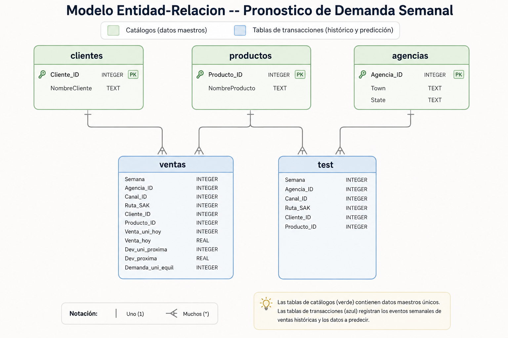

S&OP · Sr. Analyst | Pronóstico de Demanda Semanal
Objetivo del análisis
Se busca pronosticar la demanda de un producto para una semana determinada (semana 9), en una tienda en particular, a partir de 8 semanas de transacciones de venta en México. Cada semana, camiones de reparto entregan producto a los vendedores; cada transacción registra ventas y devoluciones (producto no vendido y caducado). La demanda ajustada se define como las ventas de la semana menos las devoluciones de la semana siguiente, con piso en cero — la variable objetivo del proyecto.
Demanda_uni_equil = max( 0 , Venta_uni_hoy − Dev_uni_proxima )
El "piso en cero" existe porque los registros de devoluciones a veces se prolongan varias semanas: sin él, Venta_uni_hoy − Dev_uni_proxima podría salir negativo (ocurre en 0.75% de las filas), y una demanda negativa no tiene sentido de negocio.
Se realizo un EDA (Análisis Exploratorio de Datos) mostrando la evidencia y comportamiento de los datos, para estimar el método de pronóstico mas ideal, para calcular la demanda en la semana 9.
Dataset
Se tienen 5 fuentes de adtos identificadas, correspondientes a un esquema típico de "hechos y catálogos" en un sistema de distribución. Todo el análisis se ejecutó en SQL sobre una base SQLite construida a partir de estos archivos:
dfcandidate.csv — Histórico
7,974,418 filas. Historial de ventas y devoluciones, semanas 3 a 8.
dftest.csv — A predecir
1,328,750 filas. Combinaciones cliente–producto–agencia a predecir en la semana 9, sin demanda.
cliente_tabla.csv — Clientes
935,362 filas. Catálogo de clientes (tiendas), con inconsistencias de captura a que seran necesarias de limpiar.
Producto_tabla.csv — Productos
2,592 filas. Catálogo de productos.
estados.csv — Geografía
41 filas. Ciudad y estado por agencia de distribución.
Calidad de datos
Casos donde se tenian mas espacios en blanco en la captura del nombre (4,861 de los que (100.0%) resultaron ser el mismo nombre con formato inconsistente) — solo 1 caso es un conflicto de datos genuino, dos nombres distintos.
No es un error de captura, sino una categoría legítima de puntos de venta no identificados — debe excluirse de cualquier reporte agregado por nombre de cliente.
Después de normalizar espacios y resolver placeholders, sin pérdida de información de negocio.
Menos del 0.1% de productos y 0.06% de clientes a predecir no tienen historial — manejable con una jerarquía de respaldo, no despreciable en términos absolutos.
Modelo entidad-relación
Tres catálogos (clientes, productos, agencias) y dos tablas de transacciones (el histórico de ventas y las combinaciones a predecir en la semana 9), unidas por los identificadores de cliente, producto y agencia.

Análisis
Recorrido por las cuatro fases del caso — EDA, variables jerárquicas, validación honesta y el modelo final — con la metodología, el código y la evidencia detrás de cada hallazgo relevante para la decisión de negocio.
Conclusiones
Recomendaciones
Cálculos
El código detrás de cada hallazgo de la sección "Análisis" — separado aquí para no saturar la narrativa. Cada bloque muestra la versión en SQL (como se ejecutó sobre SQLite) y su equivalente en Python.
1. Base de datos: 5 tablas con llaves reales
Catálogos (clientes, productos, agencias) con PRIMARY KEY; ventas y test con FOREIGN KEY hacia esos catálogos.
SQLCREATE TABLE ventas (
Semana INTEGER, Agencia_ID INTEGER, Cliente_ID INTEGER, Producto_ID INTEGER,
Venta_uni_hoy INTEGER, Venta_hoy REAL, Dev_uni_proxima INTEGER,
Dev_proxima REAL, Demanda_uni_equil INTEGER,
FOREIGN KEY (Cliente_ID) REFERENCES clientes(Cliente_ID),
FOREIGN KEY (Producto_ID) REFERENCES productos(Producto_ID),
FOREIGN KEY (Agencia_ID) REFERENCES agencias(Agencia_ID)
);con = sqlite3.connect(DB_PATH)
con.execute("PRAGMA foreign_keys = ON")
for chunk in pd.read_csv(DATA_DIR / "dfcandidate.csv", chunksize=500_000):
chunk.to_sql("ventas", con, if_exists="append", index=False)2. Estadísticos generales de la demanda
Mínimo, media, máximo y porcentaje de transacciones en cero — el primer vistazo a la forma de la variable, antes de profundizar con percentiles.
SQLSELECT
MIN(Demanda_uni_equil) AS minimo,
AVG(Demanda_uni_equil) AS media,
MAX(Demanda_uni_equil) AS maximo,
SUM(CASE WHEN Demanda_uni_equil = 0 THEN 1 ELSE 0 END) * 100.0
/ COUNT(*) AS pct_ceros
FROM ventas;resumen = ventas["Demanda_uni_equil"].agg(["min", "mean", "max"])
pct_ceros = (ventas["Demanda_uni_equil"] == 0).mean() * 1003. Percentiles: cuantificar el sesgo de la demanda
100 grupos de igual tamaño (no de igual ancho) — necesario porque el 80% de las transacciones vale 9 unidades o menos.
SQLWITH percentiles AS (
SELECT Demanda_uni_equil,
NTILE(100) OVER (ORDER BY Demanda_uni_equil) AS pct
FROM ventas
)
SELECT pct, MIN(Demanda_uni_equil) AS minimo, MAX(Demanda_uni_equil) AS maximo
FROM percentiles GROUP BY pct ORDER BY pct;grupo = pd.qcut(serie.rank(method="first"), 100, labels=False) + 1
resumen = serie.groupby(grupo).agg(["min", "max"])4. Limpieza de cliente_tabla: nombres duplicados
4,862 Cliente_ID con más de un nombre — 4,861 eran el mismo nombre con espacios de más, resueltos al normalizar.
SQLSELECT Cliente_ID, COUNT(DISTINCT NombreCliente) AS n_nombres
FROM clientes
GROUP BY Cliente_ID
HAVING n_nombres > 1;def normalizar_espacios(texto):
return re.sub(r"\s+", " ", texto.strip()) if pd.notna(texto) else texto
cli["NombreCliente"] = cli["NombreCliente"].apply(normalizar_espacios)
cli = cli.drop_duplicates(subset=["Cliente_ID", "NombreCliente"])5. Coeficiente de variación: ¿cuánto confiar en cada media?
SQLite no tiene función nativa de desviación estándar — se arma con la fórmula manual (varianza = promedio de las diferencias al cuadrado).
SQLWITH medias AS (
SELECT Cliente_ID, Producto_ID, AVG(Demanda_uni_equil) AS media
FROM ventas WHERE Semana BETWEEN 3 AND 7
GROUP BY Cliente_ID, Producto_ID
)
SELECT v.Cliente_ID, v.Producto_ID,
SQRT(AVG((v.Demanda_uni_equil - m.media) * (v.Demanda_uni_equil - m.media)))
/ m.media AS cv
FROM ventas v
JOIN medias m ON v.Cliente_ID = m.Cliente_ID AND v.Producto_ID = m.Producto_ID
GROUP BY v.Cliente_ID, v.Producto_ID;stats = detalle.groupby(["Cliente_ID", "Producto_ID"])["Demanda_uni_equil"].agg(["mean", "std"])
stats["cv"] = stats["std"] / stats["mean"]6. Encoders jerárquicos: media histórica por nivel
Mismo patrón repetido 5 veces (cliente+producto, agencia+producto, ruta+producto, cliente, producto), solo cambia la columna de agrupación.
SQL
-- Nivel 1: Cliente + Producto
CREATE TABLE enc_cliprod AS
SELECT Cliente_ID, Producto_ID,
AVG(Demanda_uni_equil) AS cliprod_mean,
COUNT(*) AS cliprod_count
FROM ventas
WHERE Semana BETWEEN 3 AND 7
GROUP BY Cliente_ID, Producto_ID;
-- Nivel 2: Agencia + Producto
CREATE TABLE enc_agprod AS
SELECT Agencia_ID, Producto_ID,
AVG(Demanda_uni_equil) AS agprod_mean,
COUNT(*) AS agprod_count
FROM ventas
WHERE Semana BETWEEN 3 AND 7
GROUP BY Agencia_ID, Producto_ID;
-- Nivel 3: Ruta + Producto
CREATE TABLE enc_rutaprod AS
SELECT Ruta_SAK, Producto_ID,
AVG(Demanda_uni_equil) AS rutaprod_mean,
COUNT(*) AS rutaprod_count
FROM ventas
WHERE Semana BETWEEN 3 AND 7
GROUP BY Ruta_SAK, Producto_ID;
-- Nivel 4: Cliente (sin importar el producto)
CREATE TABLE enc_cli AS
SELECT Cliente_ID,
AVG(Demanda_uni_equil) AS cli_mean,
COUNT(*) AS cli_count
FROM ventas
WHERE Semana BETWEEN 3 AND 7
GROUP BY Cliente_ID;
-- Nivel 5: Producto
CREATE TABLE enc_prod AS
SELECT Producto_ID,
AVG(Demanda_uni_equil) AS prod_mean,
COUNT(*) AS prod_count
FROM ventas
WHERE Semana BETWEEN 3 AND 7
GROUP BY Producto_ID;7. Umbral de respaldo: cuándo confiar en un ranking
El promedio del top 10 se estabiliza a partir de 150 transacciones de respaldo mínimo — antes de eso, el ranking está dominado por ruido de muestra chica.
SQLSELECT AVG(cli_mean) FROM (
SELECT cli_mean FROM enc_cli
WHERE cli_count >= 150
ORDER BY cli_mean DESC LIMIT 10
);for umbral in [1, 20, 50, 100, 150, 300]:
top10 = enc_cli[enc_cli.cli_count >= umbral].nlargest(10, "cli_mean")
print(umbral, top10.cli_mean.mean())8. Separación temporal: honesta vs. con trampa
La única diferencia es un rango de semanas — y produce un RMSLE 44.5% distinto (ver pregunta 6 de Análisis).
SQL-- Honesta: la semana 8 (a validar) queda AFUERA del calculo
SELECT Cliente_ID, Producto_ID, AVG(Demanda_uni_equil) AS cliprod_mean
FROM ventas WHERE Semana BETWEEN 3 AND 7
GROUP BY Cliente_ID, Producto_ID;
-- Con trampa: la semana 8 SI esta incluida en su propio predictor
SELECT Cliente_ID, Producto_ID, AVG(Demanda_uni_equil) AS cliprod_mean_trampa
FROM ventas WHERE Semana BETWEEN 3 AND 8
GROUP BY Cliente_ID, Producto_ID;def rmsle(y_true, y_pred):
y_pred = np.clip(y_pred, 0, None)
return np.sqrt(np.mean((np.log1p(y_pred) - np.log1p(y_true)) ** 2))
rmsle_honesta = rmsle(real, pred_honesta) # 0.6118
rmsle_trampa = rmsle(real, pred_trampa) # 0.3397 -- inflado, no confiable9. Modelo LightGBM y métricas finales
Entrenado sobre log(1 + demanda), validado contra el baseline jerárquico en la semana 8.
Pythonmodel = lgb.LGBMRegressor(
n_estimators=600, learning_rate=0.05, num_leaves=63, max_depth=8,
subsample=0.8, colsample_bytree=0.8, min_child_samples=30
)
model.fit(Xtr, ytr, eval_X=Xval, eval_y=yval, eval_metric="rmse")
pred = np.clip(np.expm1(model.predict(Xval)), 0, None)
mae = mean_absolute_error(real, pred) # 3.674
rmse = np.sqrt(mean_squared_error(real, pred)) # 14.490
rmsle_modelo = rmsle(real, pred) # 0.5624 -- pierde contra el baseline (0.5360)El script end-to-end (base de datos, encoders, muestra de clientes, predicción de la semana 9) está disponible en el perfil de GitHub del autor.